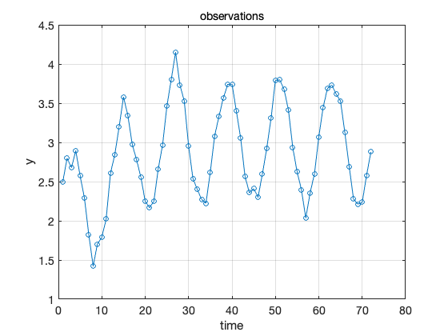
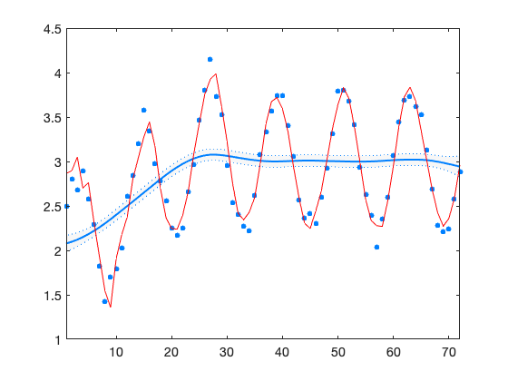
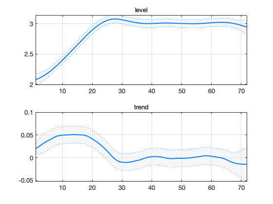
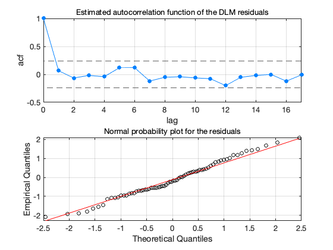

DLM demo no 2, testing DLM functions
Generate seasonal data and fit DLM model with 12 seasons.
Data
t = (1:1:(6*12))'; % time n = length(t); s = 0.1; % obs error std y = 2 + 0.5*(t-0)/12.*((t-0)<2*12) + ... 0.5*(2*12)/12.*((t-0)>=2*12) + ... 0.8*sin((t-0)/12*2*pi) + ... randn(n,1)*s;
figure(1); clf plot(t,y,'o-'); xlabel('time'); ylabel('y'); title('observations');grid;
Model error diagonal, first non zero values.
w123 = [0.0000,3.1e-5,1e-8,1e-8,1e-8,1e-8];
Options for dlmfit function. Use harmonic functions with 2 components and 12 seasons. Optimize some variance parameters using maximum likelihood.
clear options
options.ns = 12;
options.trig = 2;
options.opt = 1;
options.winds = [0 1 2 2 2 2];
DLM fit.
out = dlmfit(y,s,w123,[],[],[],options);
Iteration Func-count min f(x) Procedure
0 1 56.4488
1 3 56.4488 initial simplex
2 5 48.2807 expand
3 7 33.1171 expand
4 9 -166.988 expand
5 11 -214.797 expand
6 13 -214.797 contract outside
7 15 -214.797 contract inside
8 17 -214.797 contract inside
9 19 -216.244 contract inside
10 21 -217.027 contract inside
11 22 -217.027 reflect
12 24 -217.027 contract inside
13 26 -217.027 contract inside
14 28 -217.027 contract inside
15 30 -217.044 contract inside
16 31 -217.044 reflect
17 33 -217.044 contract inside
18 35 -217.045 contract outside
19 37 -217.046 contract inside
20 38 -217.046 reflect
21 40 -217.046 contract inside
22 42 -217.046 contract inside
23 44 -217.046 contract inside
24 46 -217.046 contract inside
25 48 -217.046 contract outside
26 50 -217.046 contract inside
27 51 -217.046 reflect
28 53 -217.046 contract inside
29 54 -217.046 reflect
30 56 -217.046 contract inside
31 58 -217.046 contract outside
32 60 -217.046 contract inside
33 61 -217.046 reflect
34 63 -217.046 contract inside
35 65 -217.046 contract inside
36 67 -217.046 contract inside
37 68 -217.046 reflect
38 70 -217.046 contract inside
39 71 -217.046 reflect
40 73 -217.046 contract inside
41 75 -217.046 contract outside
42 77 -217.046 contract inside
43 78 -217.046 reflect
44 80 -217.046 contract inside
45 82 -217.046 contract inside
46 84 -217.046 contract outside
47 86 -217.046 contract inside
48 88 -217.046 contract inside
49 90 -217.046 contract inside
50 94 -217.046 shrink
51 98 -217.046 shrink
52 102 -217.046 shrink
53 104 -217.046 contract outside
54 106 -217.046 contract outside
55 110 -217.046 shrink
56 112 -217.046 contract inside
57 116 -217.046 shrink
Optimization terminated:
the current x satisfies the termination criteria using OPTIONS.TolX of 1.000000e-04
and F(X) satisfies the convergence criteria using OPTIONS.TolFun of 1.000000e-04
woptv =
0x1 empty double column vector
woptw =
0.0085116
1.3657e-09
woptg =
0x1 empty double column vector
Default plots.
dlmplot(out);  